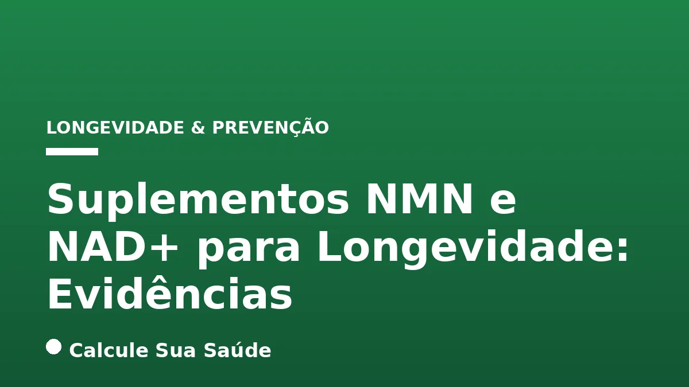

Aviso médico importante
Este conteúdo é educativo e informativo e não substitui a consulta, o diagnóstico ou o tratamento de um profissional de saúde. Em caso de sintomas, procure orientação médica.
Índice do Artigo
- 1. O Envelhecimento e a Busca pela Longevidade Saudável
- 2. NAD+: A Molécula Essencial da Vida Celular
- 3. NMN: O Precursor Promissor do NAD+
- 4. O Declínio de NAD+ com a Idade: Uma Hipótese Central
- 5. Mecanismos de Ação: Sirtuínas e PARPs
- 6. Evidências de Estudos em Animais: Um Cenário Otimista
- 7. Pesquisas em Humanos: O Que Sabemos Até Agora
- 8. NMN e NAD+ na Saúde Metabólica
- 9. Potencial Impacto na Saúde Neurológica e Cardiovascular
- 10. Segurança, Efeitos Colaterais e Dosagem
- 11. Estratégias de Estilo de Vida para Otimizar NAD+
- 12. NMN vs. NR (Nicotinamide Riboside): Qual a Diferença?
- 13. A Perspectiva Crítica e o Futuro da Pesquisa
- 14. Conclusão: Um Olhar Equilibrado sobre NMN e NAD+
- 15. Perguntas frequentes
A busca pela longevidade, especialmente pela extensão da vida com saúde (healthspan), tem impulsionado intensas pesquisas científicas. À medida que a compreensão do processo de envelhecimento avança, moléculas e vias celulares específicas emergem como alvos potenciais para intervenções. Entre os compostos que ganharam destaque nos últimos anos estão o Nicotinamida Mononucleotídeo (NMN) e o Dinucleotídeo de Nicotinamida e Adenina (NAD+), frequentemente apresentados como "moléculas antienvelhecimento".
O NAD+ é uma coenzima fundamental presente em todas as células vivas, desempenhando papéis cruciais em centenas de processos biológicos, desde a produção de energia até o reparo do DNA. Curiosamente, os níveis de NAD+ diminuem naturalmente com o avanço da idade, um fenômeno que muitos pesquisadores acreditam estar intrinsecamente ligado a diversos aspectos do envelhecimento e ao desenvolvimento de doenças crônicas.
Este artigo visa explorar, com rigor científico e base em evidências, o que realmente se sabe sobre o NMN e o NAD+ no contexto da longevidade. Separaremos o entusiasmo da pesquisa preliminar das conclusões robustas, analisando os mecanismos de ação, os resultados de estudos em animais e humanos, a segurança e as perspectivas futuras, sempre com o objetivo de fornecer informações claras e confiáveis para sua saúde.
Em resumo
- NAD+ é uma coenzima vital para centenas de processos celulares, incluindo produção de energia, reparo de DNA e regulação da expressão gênica.
- Os níveis de NAD+ diminuem naturalmente com a idade, o que é associado a disfunções celulares e ao desenvolvimento de características do envelhecimento.
- NMN (Nicotinamida Mononucleotídeo) é um precursor direto do NAD+, estudado por seu potencial em elevar os níveis intracelulares de NAD+.
- Pesquisas em modelos animais (leveduras, vermes, roedores) mostram resultados promissores para NMN e NAD+ na melhoria da saúde metabólica, função muscular e extensão da vida, mas estes resultados não se traduzem diretamente para humanos.
- Estudos em humanos sobre NMN e NAD+ são ainda limitados, focando principalmente na segurança e na capacidade de elevar os níveis de NAD+, com evidências preliminares de alguns benefícios metabólicos e funcionais em populações específicas.
- A segurança e eficácia a longo prazo dos suplementos de NMN e NAD+ em humanos ainda estão sob investigação, sem consenso sobre dosagem ideal ou benefícios garantidos para a longevidade geral.
- Estratégias de estilo de vida, como exercícios regulares, dieta equilibrada, restrição calórica e sono adequado, são formas comprovadas de otimizar a saúde celular e os níveis de NAD+ naturalmente.
1. O Envelhecimento e a Busca pela Longevidade Saudável
O envelhecimento é um processo biológico complexo e multifacetado, caracterizado por uma progressiva perda de função celular e tecidual, culminando em maior vulnerabilidade a doenças e, eventualmente, à morte. Tradicionalmente, o envelhecimento era visto como um processo inevitável e irreversível. No entanto, avanços na biologia do envelhecimento têm revelado que ele é, em grande parte, impulsionado por mecanismos moleculares e celulares que podem, em teoria, ser modulados.
A ciência moderna não busca apenas estender a expectativa de vida (lifespan), mas, crucialmente, aumentar a expectativa de vida saudável (healthspan) – o período da vida em que um indivíduo desfruta de boa saúde e funcionalidade, livre de doenças crônicas e incapacidades. Essa distinção é fundamental, pois o objetivo não é apenas viver mais, mas viver melhor por mais tempo. É nesse contexto que o interesse em intervenções que visam os pilares moleculares do envelhecimento, como o metabolismo do NAD+, tem crescido exponencialmente.
2. NAD+: A Molécula Essencial da Vida Celular
O Dinucleotídeo de Nicotinamida e Adenina (NAD+) é uma coenzima vital encontrada em todas as células do corpo humano. Sua importância reside em seu papel central em centenas de reações bioquímicas essenciais para a vida. O NAD+ existe em duas formas principais: NAD+ (oxidado) e NADH (reduzido), que atuam como transportadores de elétrons em vias metabólicas cruciais.
Entre suas funções mais importantes, destacam-se:
- Produção de Energia: O NAD+ é um componente chave na cadeia de transporte de elétrons nas mitocôndrias, o processo que gera a maior parte da energia celular na forma de ATP (adenosina trifosfato).
- Reparo do DNA: O NAD+ é consumido por enzimas como as PARPs (Poli-ADP-ribose polimerases), que são fundamentais para detectar e reparar danos no DNA, protegendo a integridade do genoma.
- Regulação da Expressão Gênica: O NAD+ é um cofator essencial para as sirtuínas (SIRTs), uma família de proteínas que atuam como desacetilases de histonas, influenciando a compactação do DNA e a expressão de genes relacionados à longevidade, metabolismo e inflamação.
- Sinalização Celular: Participa de diversas vias de sinalização que regulam processos como o estresse oxidativo, a resposta imune e a morte celular programada (apoptose).
Em suma, o NAD+ é um maestro que orquestra a saúde e a funcionalidade celular, sendo indispensável para a manutenção da homeostase e da resiliência do organismo.
3. NMN: O Precursor Promissor do NAD+
O Nicotinamida Mononucleotídeo (NMN) é uma molécula que tem atraído grande atenção na pesquisa sobre longevidade. Ele é um precursor direto do NAD+, o que significa que o corpo pode convertê-lo em NAD+ através de uma série de reações enzimáticas. A ideia por trás da suplementação com NMN é que, ao fornecer mais NMN, as células teriam mais "matéria-prima" para produzir NAD+, elevando seus níveis.
O NMN é naturalmente encontrado em pequenas quantidades em alguns alimentos comuns, como brócolis, abacate, repolho, tomate e carne bovina. No entanto, as concentrações nesses alimentos são relativamente baixas, o que levou ao desenvolvimento de suplementos para fornecer doses mais elevadas e consistentes. A via de síntese do NAD+ a partir do NMN é considerada uma das mais eficientes, tornando o NMN um foco principal nos estudos de intervenção.
4. O Declínio de NAD+ com a Idade: Uma Hipótese Central
Uma das observações mais consistentes na biologia do envelhecimento é que os níveis de NAD+ diminuem progressivamente em vários tecidos e órgãos com o avanço da idade. Essa redução é notada em humanos e em diversos modelos animais, e é considerada uma das "marcas do envelhecimento" (hallmarks of aging).
A hipótese central é que esse declínio de NAD+ contribui significativamente para o processo de envelhecimento e para a patogênese de doenças relacionadas à idade. Com menos NAD+ disponível, as células podem experimentar:
- Disfunção Mitocondrial: Redução na eficiência da produção de energia, levando a fadiga e menor capacidade funcional.
- Acúmulo de Danos no DNA: Menor atividade das PARPs, resultando em reparo de DNA menos eficiente e maior acúmulo de mutações.
- Desregulação Metabólica: Comprometimento da função das sirtuínas, afetando o metabolismo de glicose e lipídios, o que pode contribuir para condições como resistência à insulina e diabetes tipo 2.
- Inflamação Crônica: Desregulação de vias inflamatórias.
A compreensão desse declínio e seus impactos tem motivado a pesquisa sobre como restaurar os níveis de NAD+ para combater os efeitos do envelhecimento.
5. Mecanismos de Ação: Sirtuínas e PARPs
A ação do NAD+ na longevidade está intrinsecamente ligada à sua interação com enzimas-chave que regulam o envelhecimento celular. As duas famílias de enzimas mais estudadas nesse contexto são as sirtuínas e as PARPs.
Sirtuínas (SIRTs)
As sirtuínas são uma família de sete proteínas (SIRT1 a SIRT7) que funcionam como desacetilases de histonas e outras proteínas. Elas são NAD+-dependentes, o que significa que precisam de NAD+ para funcionar. As sirtuínas estão envolvidas em uma vasta gama de processos celulares, incluindo:
- Metabolismo: Regulam a sensibilidade à insulina, o metabolismo de gorduras e a produção de glicose.
- Reparo de DNA: Contribuem para a manutenção da integridade genômica.
- Inflamação: Podem modular a resposta inflamatória.
- Biogênese Mitocondrial: Promovem a formação de novas mitocôndrias.
A ativação das sirtuínas por níveis elevados de NAD+ é considerada um dos principais mecanismos pelos quais os precursores de NAD+ podem exercer efeitos antienvelhecimento.
PARPs (Poli-ADP-ribose polimerases)
As PARPs são uma família de enzimas que desempenham um papel crucial no reparo do DNA e na manutenção da estabilidade genômica. Quando o DNA é danificado, as PARPs são ativadas e utilizam NAD+ para adicionar unidades de ADP-ribose a proteínas-alvo, um processo conhecido como poli-ADP-ribosilação. Esse processo é essencial para recrutar outras proteínas de reparo e iniciar a correção do dano.
Embora as PARPs sejam vitais para o reparo do DNA, sua ativação excessiva (por exemplo, em resposta a danos extensos no DNA) pode consumir grandes quantidades de NAD+, levando ao esgotamento dos estoques celulares e, consequentemente, à disfunção de outras vias NAD+-dependentes, como as sirtuínas. A manutenção de níveis adequados de NAD+ é, portanto, um equilíbrio delicado entre o suporte ao reparo do DNA e a otimização de outras funções celulares.
6. Evidências de Estudos em Animais: Um Cenário Otimista
A maior parte do entusiasmo em torno do NMN e do NAD+ para a longevidade deriva de resultados impressionantes obtidos em modelos animais. Estudos em organismos simples como leveduras, vermes (C. elegans) e moscas (Drosophila melanogaster) demonstraram que a manipulação das vias de NAD+ pode estender significativamente a expectativa de vida.
Em mamíferos, especificamente em roedores, a suplementação com NMN e outros precursores de NAD+ tem mostrado uma série de benefícios:
- Melhora da Saúde Metabólica: Estudos em camundongos obesos e diabéticos mostraram que o NMN pode melhorar a sensibilidade à insulina, reduzir o ganho de peso e diminuir a inflamação.
- Aumento da Função Muscular: Em camundongos idosos, o NMN demonstrou melhorar a resistência física e a força muscular, revertendo alguns aspectos do declínio muscular relacionado à idade.
- Saúde Cardiovascular: Pesquisas indicam que o NMN pode melhorar a função vascular e reduzir o endurecimento arterial em camundongos idosos.
- Função Neurológica: Alguns estudos sugerem efeitos neuroprotetores, melhorando a função cognitiva e protegendo contra doenças neurodegenerativas em modelos de camundongos.
- Extensão da Vida: Embora menos consistente, alguns estudos em camundongos mostraram uma modesta extensão da expectativa de vida, especialmente quando a suplementação começa em idades mais avançadas ou em modelos de doenças.
É crucial ressaltar que, embora esses resultados sejam promissores, eles foram obtidos em modelos animais e não se traduzem automaticamente para humanos. A biologia entre espécies pode ser significativamente diferente, e os mecanismos que funcionam em um camundongo podem não ter o mesmo efeito em um ser humano.
7. Pesquisas em Humanos: O Que Sabemos Até Agora
A transição dos resultados promissores em animais para evidências robustas em humanos é um processo lento e rigoroso. Atualmente, os estudos clínicos em humanos sobre NMN e outros precursores de NAD+ ainda estão em estágios iniciais e são relativamente limitados em número, tamanho e duração.
A maioria dos estudos em humanos até o momento tem focado em:
- Segurança e Tolerabilidade: Avaliar se os suplementos são seguros para consumo humano em diferentes dosagens.
- Farmacocinética: Determinar como o corpo absorve, distribui, metaboliza e excreta o NMN/NAD+ e se ele realmente eleva os níveis de NAD+ intracelular.
- Marcadores Biológicos: Investigar se a suplementação afeta marcadores relacionados à saúde metabólica, inflamação, função muscular ou outros indicadores de envelhecimento.
Alguns estudos preliminares em humanos têm mostrado que a suplementação com NMN pode elevar os níveis de NAD+ no sangue e em alguns tecidos. Em termos de benefícios clínicos, os resultados são mais modestos e específicos:
- Um estudo em mulheres pós-menopáusicas com sobrepeso/obesidade mostrou que o NMN melhorou a sensibilidade à insulina muscular e a expressão de genes relacionados ao metabolismo.
- Outro estudo em homens idosos demonstrou que o NMN pode melhorar a resistência muscular e a função física.
No entanto, é fundamental enfatizar que ainda não existem grandes ensaios clínicos randomizados, controlados por placebo e de longo prazo que demonstrem de forma conclusiva que a suplementação com NMN ou NAD+ prolonga a vida humana ou previne doenças relacionadas à idade de forma significativa. As evidências atuais são consideradas preliminares e justificam mais pesquisas. Os resultados em humanos são encorajadores, mas não definitivos para a população geral.
8. NMN e NAD+ na Saúde Metabólica
A saúde metabólica é um pilar fundamental da longevidade, e o metabolismo do NAD+ está intimamente ligado a ela. O NAD+ é um cofator essencial em vias que regulam a produção de energia, o metabolismo de glicose e lipídios. Com o envelhecimento, a disfunção metabólica, como a resistência à insulina e a dislipidemia, torna-se mais comum, contribuindo para doenças como diabetes tipo 2 e doenças cardiovasculares.
Estudos em animais têm demonstrado consistentemente que a suplementação com NMN e outros precursores de NAD+ pode melhorar a sensibilidade à insulina, reduzir a acumulação de gordura no fígado e otimizar o metabolismo energético. Esses efeitos são frequentemente mediados pela ativação das sirtuínas, que regulam genes envolvidos no metabolismo.
Em humanos, as evidências são mais incipientes, mas promissoras. Alguns estudos pequenos sugerem que o NMN pode melhorar a sensibilidade à insulina em indivíduos com sobrepeso ou obesidade. A capacidade de otimizar o metabolismo da glicose e dos lipídios é um dos caminhos mais estudados para os potenciais benefícios do NMN e NAD+ na saúde. Para mais informações sobre como o açúcar afeta o corpo, veja nosso artigo sobre Açúcar: Efeitos no Corpo e Estratégias para Reduzir o Consumo. Entender o papel do Colesterol e Triglicerídeos: Guia Completo também é crucial para a saúde metabólica.
9. Potencial Impacto na Saúde Neurológica e Cardiovascular
Além da saúde metabólica, o NMN e o NAD+ são investigados por seus potenciais efeitos protetores em sistemas vitais como o neurológico e o cardiovascular.
Saúde Neurológica
O cérebro é um órgão com alta demanda energética e é particularmente vulnerável ao declínio de NAD+ com a idade. O NAD+ desempenha um papel crucial na manutenção da função neuronal, na plasticidade sináptica e no reparo de danos. Em modelos animais, a suplementação com NMN tem mostrado efeitos neuroprotetores, incluindo a melhoria da função cognitiva, a redução da inflamação cerebral e a proteção contra a degeneração neuronal em condições que mimetizam doenças como Alzheimer e Parkinson. Acredita-se que esses efeitos sejam mediados pela restauração da função mitocondrial e pela ativação de sirtuínas no cérebro. Para mais informações sobre a prevenção de doenças neurodegenerativas, consulte nosso artigo sobre Alzheimer: Prevenção, Sintomas e Novos Tratamentos.
Saúde Cardiovascular
O sistema cardiovascular também sofre os impactos do envelhecimento, com o aumento do risco de aterosclerose, hipertensão e insuficiência cardíaca. O NAD+ é importante para a função endotelial (saúde dos vasos sanguíneos), a redução do estresse oxidativo e a manutenção da integridade das células cardíacas. Estudos em animais indicaram que o NMN pode melhorar a função vascular, reduzir o endurecimento arterial e proteger o coração contra lesões isquêmicas. Esses benefícios estão frequentemente associados à capacidade do NAD+ de ativar enzimas antioxidantes e anti-inflamatórias. Para aprofundar seu conhecimento sobre a importância dos antioxidantes, leia Antioxidantes: O Que São, Onde Encontrar e Evidências.
É importante reiterar que, embora os resultados em animais sejam promissores, a evidência em humanos para esses benefícios neurológicos e cardiovasculares ainda é muito limitada e requer estudos clínicos mais extensos e de longo prazo.
10. Segurança, Efeitos Colaterais e Dosagem
A segurança é uma preocupação primordial para qualquer suplemento, especialmente aqueles voltados para a saúde a longo prazo. Até o momento, os estudos clínicos em humanos que investigaram o NMN e outros precursores de NAD+ em doses moderadas (geralmente entre 250 mg e 1000 mg por dia) e por períodos de tempo limitados (semanas a poucos meses) têm demonstrado que esses compostos são geralmente bem tolerados e considerados seguros.
Os efeitos colaterais relatados são raros e, quando ocorrem, tendem a ser leves, incluindo desconforto gastrointestinal (como náuseas ou diarreia) em alguns indivíduos. No entanto, a falta de estudos de longo prazo (vários anos) em grandes populações significa que ainda não temos um perfil completo de segurança para o uso crônico de NMN ou NAD+.
Dosagem
Atualmente, não existe uma dosagem padronizada ou aprovada por agências reguladoras para o NMN ou NAD+ para fins de longevidade. As doses utilizadas em pesquisas variam amplamente, com muitos estudos em humanos empregando entre 250 mg e 1000 mg de NMN por dia. A dose ideal pode depender de fatores como idade, saúde geral e objetivos específicos, mas ainda não há consenso científico.
Regulamentação
É crucial entender que, como suplementos dietéticos, o NMN e o NAD+ não são regulados da mesma forma que os medicamentos. Isso significa que a qualidade, pureza e concentração do ingrediente ativo podem variar significativamente entre os diferentes produtos disponíveis no mercado. A falta de supervisão rigorosa pode levar a produtos subdosados, contaminados ou com ingredientes não declarados. Aconselha-se a escolha de marcas com boa reputação e que forneçam testes de terceiros para garantir a qualidade.
11. Estratégias de Estilo de Vida para Otimizar NAD+
Embora a suplementação com NMN e NAD+ seja um campo de pesquisa empolgante, é fundamental lembrar que o estilo de vida desempenha um papel crucial na manutenção dos níveis de NAD+ e na promoção da longevidade. Existem diversas estratégias comprovadas que podem otimizar naturalmente o metabolismo do NAD+ e a saúde celular:
- Exercício Físico Regular: A atividade física, especialmente exercícios de resistência e treinamento de alta intensidade (HIIT), demonstrou aumentar os níveis de NAD+ e a atividade das sirtuínas nos músculos. O exercício estimula a biogênese mitocondrial, processo que requer NAD+. Para saber mais sobre os benefícios da atividade física, confira Caminhada: Benefícios para a Saúde e Quantos Passos Diários.
- Restrição Calórica e Jejum Intermitente: A redução da ingestão calórica total ou a prática de jejum intermitente (períodos de alimentação seguidos por períodos de jejum) são estratégias que ativam vias de longevidade, incluindo as sirtuínas, e podem aumentar os níveis de NAD+.
- Dieta Equilibrada: Uma dieta rica em nutrientes, com abundância de vegetais, frutas, grãos integrais e proteínas magras, fornece os precursores necessários para a síntese de NAD+, como triptofano e niacina (vitamina B3). Alimentos como brócolis, abacate, repolho e cogumelos contêm pequenas quantidades de NMN.
- Sono de Qualidade: Um sono adequado e reparador é essencial para a saúde celular e a regulação do ritmo circadiano, que por sua vez influencia o metabolismo do NAD+. A privação do sono pode desregular essas vias. Aprofunde-se na importância do sono em Sono Profundo: Fases, Importância e Melhoria.
- Evitar Excesso de Álcool e Exposição Solar: O consumo excessivo de álcool e a exposição prolongada e desprotegida ao sol podem esgotar os estoques de NAD+, pois o corpo utiliza essa coenzima para reparar os danos causados por esses fatores.
Essas intervenções de estilo de vida são a base para uma vida longa e saudável e devem ser priorizadas antes de qualquer consideração sobre suplementos.
| Fator de Estilo de Vida | Impacto no NAD+ e Longevidade | Mecanismo Principal |
|---|---|---|
| Exercício Físico Regular | Aumenta NAD+, ativa sirtuínas, melhora função mitocondrial | Estresse metabólico adaptativo, biogênese mitocondrial |
| Restrição Calórica / Jejum Intermitente | Aumenta NAD+, ativa sirtuínas, autofagia | Modulação de vias de sinalização de nutrientes |
| Dieta Rica em Nutrientes | Fornece precursores de NAD+ (B3), antioxidantes | Disponibilidade de substratos, redução de estresse oxidativo |
| Sono de Qualidade | Otimiza ritmo circadiano, reparo celular | Regulação de enzimas de síntese e consumo de NAD+ |
| Redução de Estresse | Minimiza consumo de NAD+ por PARPs em resposta ao estresse | Redução de danos celulares e inflamação |
12. NMN vs. NR (Nicotinamide Riboside): Qual a Diferença?
Além do NMN, outro precursor de NAD+ que tem sido amplamente estudado é o Nicotinamide Riboside (NR). Ambos são moléculas que o corpo pode converter em NAD+, mas eles seguem caminhos ligeiramente diferentes para essa conversão.
O NR é convertido em NMN e, em seguida, em NAD+. Ambos têm demonstrado a capacidade de elevar os níveis de NAD+ em estudos animais e humanos. A escolha entre NMN e NR como suplemento ainda é objeto de debate na comunidade científica, e não há um consenso claro sobre qual seria superior em termos de eficácia ou biodisponibilidade para todos os indivíduos.
Assim como o NMN, o NR também tem sido associado a potenciais benefícios em modelos animais, incluindo melhorias na saúde metabólica, função muscular e proteção neurológica. Os estudos em humanos com NR também são preliminares, mas indicam que ele é seguro e eficaz em elevar os níveis de NAD+.
A pesquisa continua a comparar e contrastar esses dois precursores, e é provável que a eficácia de cada um possa variar dependendo do contexto biológico individual e dos objetivos específicos. No momento, a recomendação é focar na qualidade e pureza do produto, independentemente de ser NMN ou NR, e sempre com orientação profissional.
13. A Perspectiva Crítica e o Futuro da Pesquisa
Apesar do entusiasmo e dos resultados promissores em modelos pré-clínicos, é fundamental manter uma perspectiva crítica e baseada em evidências em relação aos suplementos de NMN e NAD+. A ciência da longevidade é um campo em rápida evolução, e o que parece promissor hoje pode não se sustentar em estudos mais rigorosos.
Os principais desafios e áreas para futuras pesquisas incluem:
- Ensaios Clínicos de Longo Prazo e em Grande Escala: São necessários estudos com milhares de participantes, acompanhados por muitos anos, para determinar se NMN ou NAD+ podem realmente prolongar a expectativa de vida saudável em humanos e prevenir doenças crônicas.
- Dosagem e Formulação Otimizadas: A dose ideal, a forma de administração e a formulação mais eficaz ainda precisam ser estabelecidas.
- Populações Específicas: É possível que os benefícios sejam mais pronunciados em certas populações (por exemplo, idosos, indivíduos com condições metabólicas específicas) do que na população geral.
- Mecanismos de Ação Detalhados: Embora os mecanismos gerais sejam conhecidos, a compreensão completa de como esses suplementos interagem com a complexa rede de vias de envelhecimento ainda está em desenvolvimento.
- Interações e Efeitos Adversos Raros: Estudos de longo prazo são cruciais para identificar quaisquer efeitos adversos raros ou interações com medicamentos que possam surgir com o uso crônico.
A pesquisa sobre NMN e NAD+ representa uma fronteira emocionante na biologia do envelhecimento. No entanto, é vital que as expectativas sejam gerenciadas e que as decisões sobre suplementação sejam tomadas com base em evidências sólidas e aconselhamento médico, e não em marketing ou promessas exageradas.
14. Conclusão: Um Olhar Equilibrado sobre NMN e NAD+
NMN e NAD+ são, sem dúvida, moléculas fascinantes no estudo do envelhecimento e da longevidade. O papel central do NAD+ na saúde celular e o declínio de seus níveis com a idade fornecem uma base biológica sólida para a investigação de seus precursores como intervenções antienvelhecimento.
Os resultados de estudos em modelos animais são consistentemente promissores, sugerindo que a elevação dos níveis de NAD+ pode melhorar a saúde metabólica, a função física e neurológica, e até mesmo estender a vida em algumas espécies. No entanto, é crucial reiterar que as evidências em humanos ainda são preliminares. Embora alguns estudos iniciais em humanos tenham mostrado segurança e a capacidade de aumentar os níveis de NAD+, com potenciais benefícios em marcadores específicos, ainda não há provas conclusivas de que esses suplementos prolongam a vida ou previnem doenças em larga escala na população humana.
Para aqueles interessados em otimizar sua longevidade e saúde, a prioridade deve ser sempre as intervenções de estilo de vida comprovadas: uma dieta nutritiva, exercícios físicos regulares, sono de qualidade, controle do estresse e evitar hábitos prejudiciais. Essas são as bases inegociáveis para uma vida longa e saudável.
Se você está considerando a suplementação com NMN ou NAD+, é imperativo que você discuta essa decisão com um profissional de saúde qualificado. Ele poderá avaliar sua condição individual, histórico médico e ajudar a determinar se tal suplementação é apropriada e segura para você, considerando as evidências científicas atuais e a falta de regulamentação rigorosa para esses produtos. A ciência continua a avançar, e o futuro da pesquisa sobre NAD+ certamente trará mais clareza sobre o verdadeiro potencial dessas moléculas.
15. Perguntas frequentes
O que são NMN e NAD+?
NAD+ (Dinucleotídeo de Nicotinamida e Adenina) é uma coenzima essencial para centenas de processos celulares, incluindo produção de energia e reparo de DNA. NMN (Nicotinamida Mononucleotídeo) é uma molécula precursora direta que o corpo converte em NAD+ para aumentar seus níveis.
Por que os níveis de NAD+ diminuem com a idade?
Os níveis de NAD+ diminuem naturalmente com o envelhecimento devido a fatores como aumento do consumo por enzimas de reparo de DNA (PARPs) e inflamação, além da redução na atividade das enzimas que sintetizam NAD+. Esse declínio é associado a disfunções celulares e características do envelhecimento.
Os suplementos de NMN e NAD+ realmente funcionam para a longevidade?
Em modelos animais, NMN e NAD+ mostraram resultados promissores na melhoria da saúde e extensão da vida. Em humanos, os estudos são preliminares, focando em segurança e elevação dos níveis de NAD+, com algumas evidências de benefícios metabólicos e funcionais. No entanto, não há provas conclusivas de que prolonguem a vida humana.
Quais são os potenciais benefícios dos suplementos de NMN e NAD+?
Pesquisas sugerem potenciais benefícios na melhoria da saúde metabólica (sensibilidade à insulina), função muscular, saúde cardiovascular e neurológica, principalmente em modelos animais. Em humanos, esses benefícios ainda estão sob investigação e são considerados preliminares.
Existem efeitos colaterais ou riscos associados ao uso de NMN e NAD+?
Em estudos de curto prazo e em doses moderadas, NMN e NAD+ são geralmente bem tolerados, com efeitos colaterais raros e leves (como desconforto gastrointestinal). Contudo, a segurança a longo prazo e os riscos potenciais do uso crônico ainda não foram completamente estabelecidos em grandes populações humanas.
Qual a dosagem recomendada para NMN ou NAD+?
Não existe uma dosagem padronizada ou aprovada por agências reguladoras para NMN ou NAD+. As doses utilizadas em pesquisas em humanos variam, geralmente entre 250 mg e 1000 mg de NMN por dia. A dosagem ideal para cada indivíduo deve ser discutida com um profissional de saúde.
Posso aumentar meus níveis de NAD+ sem suplementos?
Sim, diversas estratégias de estilo de vida podem otimizar os níveis de NAD+ naturalmente. Isso inclui exercícios físicos regulares, restrição calórica ou jejum intermitente, uma dieta equilibrada rica em precursores de NAD+ (como niacina) e sono de qualidade.
Devo consultar um médico antes de tomar suplementos de NMN ou NAD+?
Sim, é altamente recomendável consultar um médico ou profissional de saúde antes de iniciar qualquer suplementação com NMN ou NAD+. Eles podem avaliar sua saúde geral, histórico médico e potenciais interações, garantindo que a decisão seja segura e apropriada para suas necessidades.
Leia também
Referências e Fontes
1. Verdin, E. NAD+ in aging, metabolism, and neurodegeneration. Science. 2015. Disponível em: science.org
2. Yoshino, J., et al. NAD+ Intermediates: The Biology and Therapeutic Potential of NMN and NR. Cell Metabolism. 2018. Disponível em: cell.com)30441-3
3. Rajman, L., et al. Therapeutic Potential of NAD+-Boosting Molecules: The In Vivo Evidence. Cell Metabolism. 2020. Disponível em: cell.com)30114-1
4. National Institute on Aging (NIA). What Is Aging? Disponível em: nia.nih.gov
5. Martens, C. R., et al. Chronic nicotinamide riboside supplementation is well tolerated and elevates NAD+ in healthy middle-aged and older adults. Nature Communications. 2018. Disponível em: nature.com
6. Irie, J., et al. Effect of oral administration of nicotinamide mononucleotide on clinical parameters and cellular NAD+ levels in healthy Japanese men. Endocrine Journal. 2020. Disponível em: jstage.jst.go.jp
7. Pencina, K. M., et al. Nicotinamide mononucleotide (NMN) supplementation in humans: A systematic review. Frontiers in Nutrition. 2022. Disponível em: frontiersin.org
8. Gomes, A. P., et al. Declining NAD+ Induces a Pseudohypoxic State Disrupting Sirtuin Communications during Aging. Cell. 2013. Disponível em: cell.com)00152-7